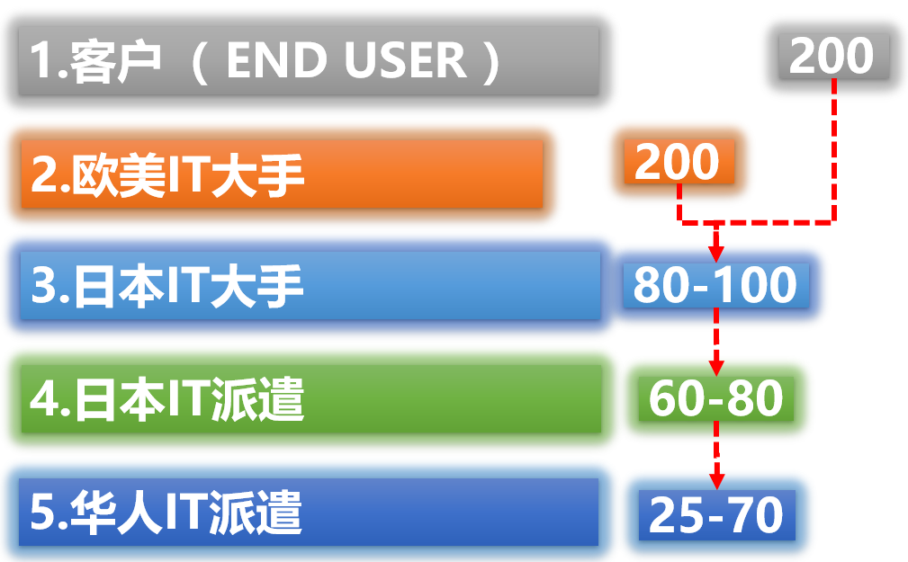

很多刚来日本做IT的技术者，只知道自己每个月拿多少钱，却不知道客户那边为你付出了多少。 这中间的差距，有时候大得令人咋舌。
今天就来拆解一下日本IT派遣行业的五层架构， 帮你搞清楚：那200万的单价，是怎么一层一层流到你手里，最后只剩下25万的。
五层金字塔结构
日本IT派遣行业，从上到下是一个清晰的五层结构：

- 第一层：终端客户（END USER）
银行、制造业、政府机关、零售企业……这些才是真正的甲方，也是整个链条上钱的源头。他们为IT项目付出的单价，动辄 200万日元/月。 - 第二层：欧美IT大手
Accenture、IBM、Capgemini 等跨国咨询巨头。他们负责承接大项目、做顶层设计，拿走最大的一块蛋糕，转手单价降至 80～100万。 - 第三层：日本IT大手
富士通、NTT Data、野村综研……日本本土IT巨头，负责项目管理和中间层开发，再往下转包，单价到 60～80万。 - 第四层：日本IT派遣公司
数量庞大，负责向日本大手输送人力资源，每层再抽一层利润。 - 第五层：华人IT派遣公司
我们大多数人所在的位置。技术者最终拿到手的单价，通常在 25～70万之间。
钱是怎么流失的？
我们以 Java 全栈技术者为例，来看一个完整的链条：
终端客户付出 200万，到了日本大手手里变成 80万， 再经过日本派遣公司转包降到 60万， 华人派遣公司接手后再抽5万左右的利润， 最终技术者到手可能只有 40～55万。
也就是说，从终端客户掏出的200万里，技术者能拿到的，可能还不到四分之一。 其余的钱，都流进了每一层中间商的口袋。
这就是为什么同样是做IT，技术者之间的收入差距如此之大—— 有人在第二层做架构师，拿着接近大手薪资的待遇； 有人在第五层做CRUD，月薪还在30万以下挣扎。
中日派遣公司的数量对比
日本IT派遣公司的数量，远超很多人的想象：
- 日本IT派遣公司（含日本本土）：不足10,000家
- 面向日本市场的华人派遣公司：不足800家
800家华人派遣公司，争夺着同一批技术者和同一批客户口座。 市场竞争极为激烈，这也是华人派遣公司很难在价格上强硬谈判的原因—— 客户清楚地知道，有的是替代选择。
理解架构，才能找到出路
搞懂这个架构，不是为了抱怨，而是为了找到自己的定位和突破口。
1. 往上爬，靠的是日语和信任。
越靠近第一层，日语要求越高，和客户的关系越重要。
技术水平只是基础，能直接和客户沟通需求的人，才有资格拿到更高的单价。
2. 警惕多层转包。
有些案件经过三四层转包之后，到技术者手里的单价已经非常可怜。
入场前一定要弄清楚自己处于哪一层，会社的口座在哪里。
3. 口座决定天花板。
会社是否和终端客户或日本大手有直接口座，直接决定了你能拿到的最高单价。
入行时选择会社，这一点很重要，不要只看手里薪资。
4. 个人事业主是终极形态。
当你积累了足够的客户信任和人脉，直接作为个人事业主对接项目，
可以拿到接近第三层甚至第二层的单价，年收入破千万也不再是梦话。
写在最后
日本IT派遣的架构，本质上是一套把风险和利润层层分配的体系。 越靠上的层，承担越多的项目风险，拿走越多的利润； 越靠下的层，风险相对可控，但天花板也明显偏低。
知道自己身处哪一层，才能知道往哪里努力。 这不是悲观，而是清醒。